产品数据及使用
原始数据
Bp.fits
http://jsoc.stanford.edu/doc/data/hmi/sharp/sharp.htm
Bt.fits
http://jsoc.stanford.edu/doc/data/hmi/sharp/sharp.htm
Br.fits
http://jsoc.stanford.edu/doc/data/hmi/sharp/sharp.htm
预处理数据文件
grid.ini
| 参数 | 信息 |
|---|---|
| 是否保存 | 全部保存 |
| 具体包括 | grid1.ini，grid2.ini，grid3.ini |
| 文件含义 | 存储二维的nx，ny边界大小； 存储nz想要计算高度的大小，其中nx，ny，nz为同一比例尺； nd存储缓冲区大小； mu无实际意义，兼容以前版本 |
allboundaries.dat
| 参数 | 信息 |
|---|---|
| 是否保存 | 全部保存 |
| 具体包括 | allboundaries1.dat，allboundaries2.dat，allboundaries3.dat |
| 文件含义 | 转换存储fits二维的Bp，Bt，Br二维数据 |
mask.dat
| 参数 | 信息 |
|---|---|
| 是否保存 | 全部保存 |
| 具体包括 | mask1.dat，mask2.dat，mask3.dat |
| 文件含义 | 存储计算需要的error mask |
boundary.ini
| 参数 | 信息 |
|---|---|
| 是否保存 | 全部保存 |
| 具体包括 | boundary.ini |
| 文件含义 | 存储计算需要的error mask等基本信息 |
产品数据文件
Bout.bin
| 参数 | 信息 |
|---|---|
| 是否保存 | 全部保存 |
| 具体包括 | Bout.bin |
| 文件含义 | 非线性无力场3D数据，其nx，ny，nz尺寸与gridx.ini一致，x取1，2或3取决于该数据最后跑到第几层 |
数据格式
理解角度

存储角度
整体是一个3*nx*ny*nz的浮点二进制数组，与c语言数组存储方式一致，即nz变化最快。

B0.bin
| 参数 | 信息 |
|---|---|
| 是否保存 | 部分保存 |
| 具体包括 | B0.bin |
| 文件含义 | 势场3D数据 |
run.log
| 参数 | 信息 |
|---|---|
| 是否保存 | 全部保存 |
| 具体包括 | run.log |
| 文件含义 | 运行日志，包含运行平台、计算数据、算法输出日志等信息 |
NLFFFquality.log
| 参数 | 信息 |
|---|---|
| 是否保存 | 全部保存 |
| 具体包括 | NLFFFquality1.log、NLFFFquality2.log、NLFFFquality3.log |
| 文件含义 | 数据质量 |
Energy.log
| 参数 | 信息 |
|---|---|
| 是否保存 | 全部保存 |
| 具体包括 | Energy.log |
| 文件含义 | TODO |
prot.log
| 参数 | 信息 |
|---|---|
| 是否保存 | 全部保存 |
| 具体包括 | prot1.log、prot2.log、prot3.log |
| 文件含义 | TODO |
step.log
| 参数 | 信息 |
|---|---|
| 是否保存 | 全部保存 |
| 具体包括 | step1.log、step2.log、step3.log |
| 文件含义 | TODO |
zboundaries2n2.dat
| 参数 | 信息 |
|---|---|
| 是否保存 | 全部保存 |
| 具体包括 | zboundaries2n2.dat |
| 文件含义 | TODO |